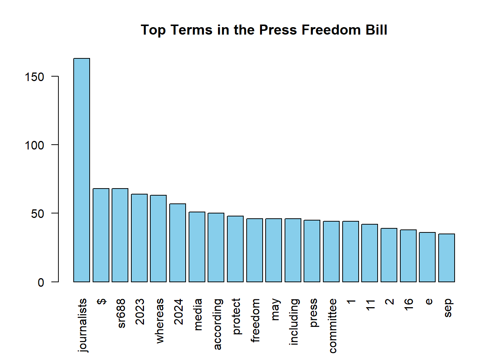

3. Compare Biden-Xi Summit Tweets and US Presidential Inaugural Speeches
The Biden-Xi summit tweets largely focus on geopolitical tensions, diplomacy, and U.S.–China relations, with frequent use of terms like “Biden,” “Xi,” “China,” and hashtags such as #uschina and #summit. The language is informal, immediate, and often emotionally charged, reflecting real-time public reaction.
In contrast, U.S. presidential inaugural speeches are formal, structured reflections of national values and political priorities. While early speeches emphasized unity, liberty, and the Constitution, modern ones address broader issues like security, economy, and climate change. Despite evolving language and tone, recurring themes like democracy, nationhood, and the American people persist. Together, the datasets illustrate how public discourse and presidential rhetoric both reflect and shape national identity over time.
4. What is Wordfish?
Wordfish is an unsupervised text scaling method used to estimate the position of documents (like political speeches or tweets) along a single latent dimension, such as ideology. It analyzes word frequencies to place texts on a scale without needing predefined labels.
In R, it’s implemented via textmodel_wordfish() in the quanteda.textmodels package and outputs each document’s position (theta) and word influence (beta) to help interpret the underlying topic or stance.
5. How to Compare Positions (Wordfish and Scaling Methods)
To compare document positions using Wordfish and other scaling methods:
Use textmodel_wordfish() to estimate theta for each document based on word frequencies.
Visualize the positions using plot(model$theta) or rank documents numerically to interpret their relative stances.
Compare across groups (e.g., by author or date) to reveal ideological or thematic shifts.
Wordfish is ideal for unsupervised comparison. For supervised comparison (with reference categories), textmodel_wordscores() can be used.
Complementary methods include Latent Semantic Analysis (LSA), Correspondence Analysis (CA), or topic modeling for multidimensional scaling.
6. Exercise: Try downloading 118th Congress Congressional Hearings in Committee on Foreign Affairs?
We explore U.S. government documents containing “Foreign Affairs” in the title or teaser. Since there’s no dedicated congress field, we inspect packageId and apply flexible filtering.
library(jsonlite)library(dplyr)
Attaching package: 'dplyr'
The following objects are masked from 'package:stats':
filter, lag
The following objects are masked from 'package:base':
intersect, setdiff, setequal, union
# Read JSON and extract documentsgf_list1 <-read_json("https://github.com/datageneration/datamethods/raw/refs/heads/master/webdata/govinfo-search-results-2024-10-13T07_18_29.json")govfiles3 <-bind_rows(gf_list1$resultSet)# Filter for Foreign Affairsforeign_affairs_docs <- govfiles3 %>%filter(grepl("Foreign Affairs", title, ignore.case =TRUE))head(foreign_affairs_docs$title)
[1] "A bill to establish the Office of Press Freedom, to create press freedom curriculum at the National Foreign Affairs Training Center, and for other purposes; to the Committee on Foreign Relations."
7. Create a corpus using government documents selected from the govinfo.gov website
To avoid replicating earlier examples, we use a different Foreign Affairs-related document titled:
“A bill to establish the Office of Press Freedom, to create press freedom curriculum at the National Foreign Affairs Training Center…”
This document is selected from the govinfo.gov dataset and will be downloaded and processed into a corpus.
library(jsonlite)library(pdftools)
Using poppler version 25.02.0
library(quanteda)# Load metadata from JSONgf_list1 <-read_json("https://github.com/datageneration/datamethods/raw/refs/heads/master/webdata/govinfo-search-results-2024-10-13T07_18_29.json")govfiles3 <-bind_rows(gf_list1$resultSet)# Find document about Press Freedomdoc_index <-which(grepl("Press Freedom", govfiles3$title))url <- govfiles3$pdfLink[doc_index]id <- govfiles3$index[doc_index]# Set your actual directory pathsave_dir <-"D:/UTD/Courses/Spring 2025/EPPS 6323 Knowledge Mining/assignments/KM_Assignment04/"# Create directory if it doesn't existdir.create(save_dir, recursive =TRUE, showWarnings =FALSE)# Use only the first matching document (in case there are multiple)destfile <-paste0(save_dir, "govfiles_", id[1], ".pdf")# Download PDFdownload.file(url[1], destfile, mode ="wb")# Extract text and build corpustxt <-pdf_text(destfile)full_text <-paste(txt, collapse ="\n")corp <-corpus(full_text)# Tokenize and plotdfm_doc <- corp %>%tokens(remove_punct =TRUE) %>%tokens_remove(stopwords("english")) %>%dfm() %>%dfm_trim(min_termfreq =3)textplot_wordcloud(dfm_doc)
Additional Analysis
To deepen the corpus analysis beyond the word cloud, we include:
🔹 Top Words Bar Plot
Displays the 20 most frequent terms in the document.
topwords <-topfeatures(dfm_doc, 20)barplot(topwords, las =2, col ="skyblue", main ="Top Terms in the Press Freedom Bill")

🔹 Document Summary
General metadata about the corpus object.
summary(corp)
Corpus consisting of 1 document, showing 1 document:
Text Types Tokens Sentences
text1 2256 10811 43